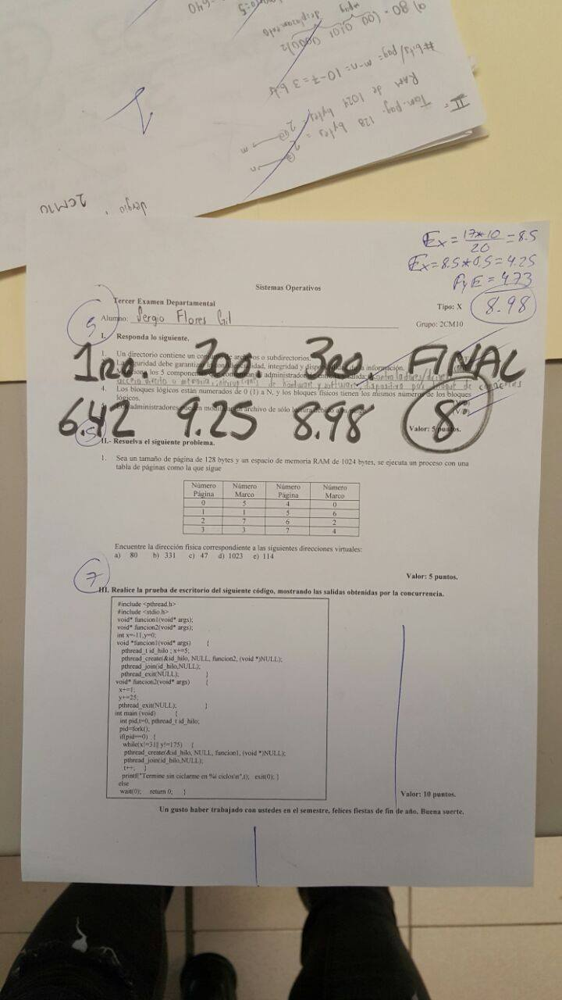

Skip to content
Projects
Groups
Snippets
Help
Loading...
Help
Contribute to GitLab
Sign in / Register
Toggle navigation
götterdämmerung
Project
Project
Details
Activity
Cycle Analytics
Repository
Repository
Files
Commits
Branches
Tags
Contributors
Graph
Compare
Charts
Locked Files
Issues
0
Issues
0
List
Boards
Labels
Service Desk
Milestones
CI / CD
CI / CD
Pipelines
Jobs
Schedules
Charts
Wiki
Wiki
Snippets
Snippets
Members
Members
Collapse sidebar
Close sidebar
Activity
Graph
Charts
Create a new issue
Jobs
Commits
Issue Boards
Open sidebar
possessedbysatan
götterdämmerung
Repository
master
Switch branch/tag
gotterdamerung
SistemasOperativos
examenes
35357623_1836090383151925_60127130906...
Find file
History
Permalink
Agregar faltantes
· c293c5f4
possessedbysatan
authored
5 months ago
c293c5f4
35357623_1836090383151925_6012713090641035264_n.jpg
72.7 KB
Download (72.7 KB)

Replace 35357623_1836090383151925_6012713090641035264_n.jpg
×
Attach a file by drag & drop or
click to upload
Commit message
Replace 35357623_1836090383151925_6012713090641035264_n.jpg
Replace file
Cancel
A new branch will be created in your fork and a new merge request will be started.
{kind=link}
{kind=link}
{kind=link}
_files/35357623_1836090383151925_6012713090641035264_n.jpg){kind=link}